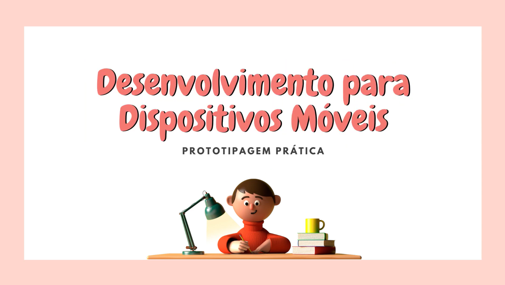
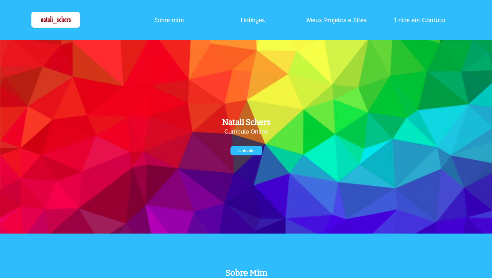
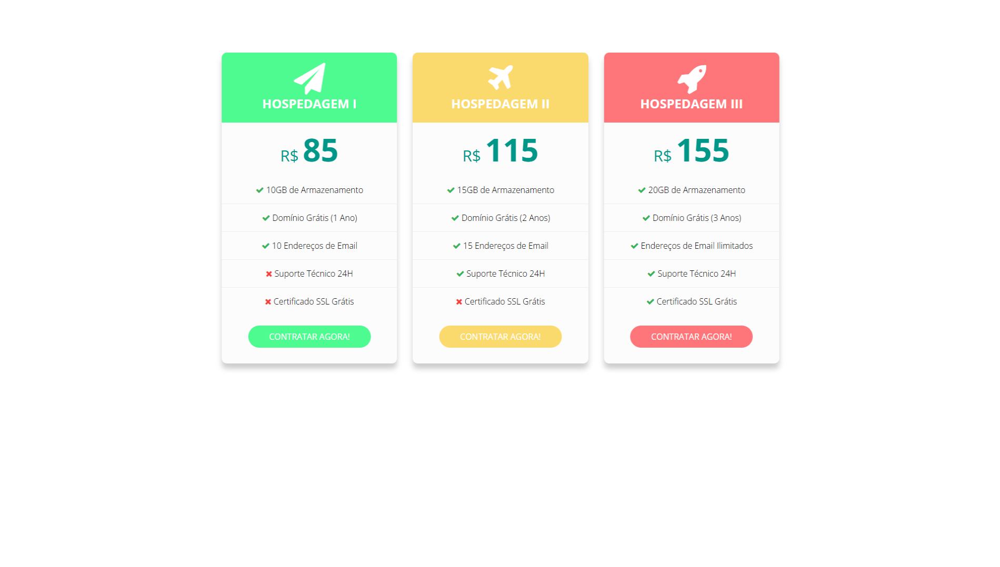
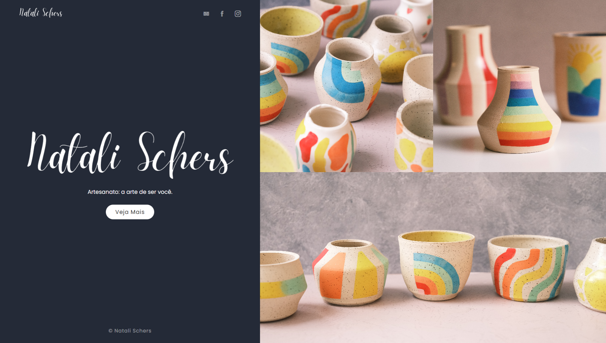
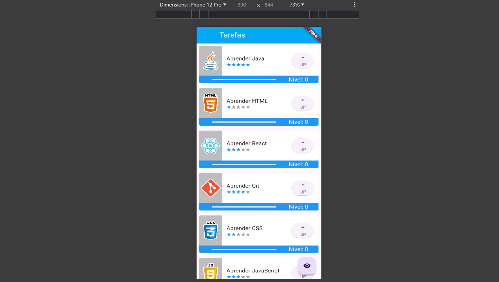
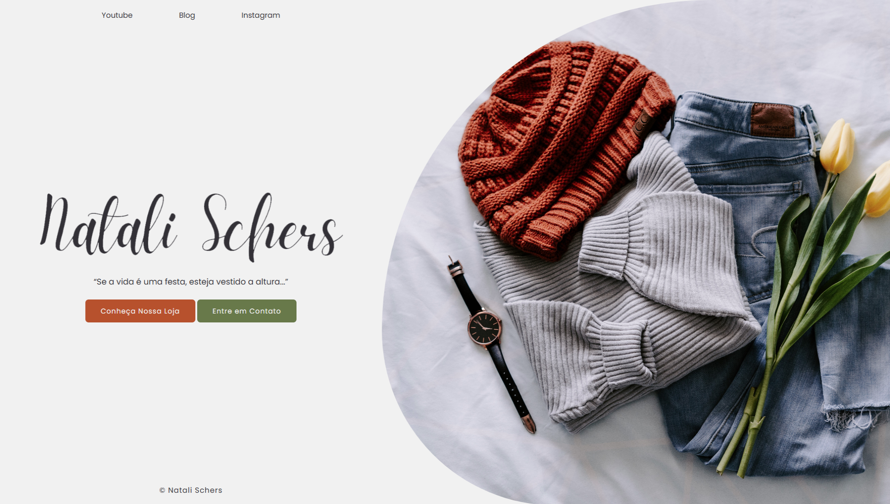
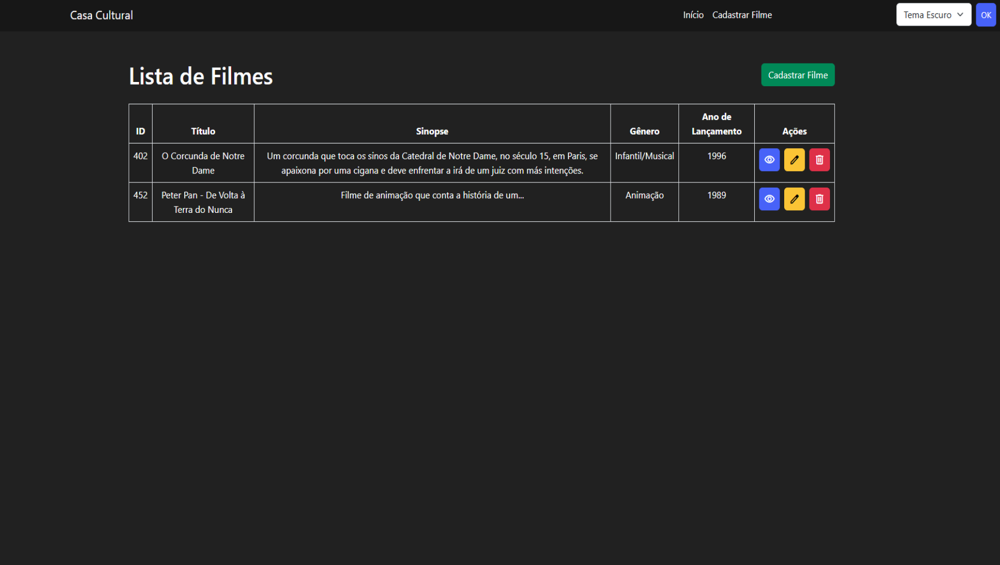

Projetos

Prototipagem Prática
Esse vídeo foi desenvolvido para compor a nota do componente
curricular Desenvolvimento para Dispositivos Móveis. Foi o meu primeiro contato com design e
tenho muito orgulho dessa atividade.
Acesse aqui

Meu Primeiro Site
Não poderia deixar de colocar aqui meu primeiro site, desenvolvido
para a matéria Interfaces da Web do curso de Informática para Internet. Apesar dos links
quebrados e da escolha tenebrosa de cores, fico feliz vendo o quanto evolui desde
então.
Acesse aqui

Cards de Preço
Esse é um componente que desenvolvi para exercitar um pouco a criação
de sites responsivos, pois tive grande dificuldade com esse tema no início. Foi feito
seguindo uma vídeo-aula no youtube.
Acesse aqui

Landing Page
Essa é uma landing page que desenvolvi para aprimorar meus
conhecimentos de CSS e me aprofundar um pouco mais em flex-box.
Acesse aqui

Lista de Tarefas
Essa lista de tarefas foi desenvolvida durante o curso Flutter: Widgets, Stateless, Stateful, Imagens e Animações da alura, onde foram explorados os conceitos de widgets, stateful e stateless, aplicação de boas práticas e estilização.
Acesse aqui

Landing Page
Seguindo o mesmo molde da anterior, desenvolvi a mesma landing page
do zero para colocar em prática os conceitos que aprendi, além de criar um layout
personalizado que fosse mais a minha cara.
Acesse aqui
O projeto Estagiei foi meu primeiro TCC e consistia em uma plataforma
para gestão de estagiários dentro das empresas, permitindo que a entrega de relatórios e o
acompanhamento do mesmo fosse feito pelos coordenadores de curso da instituição de ensino e
responsáveis da parte da empresa.
O front-end da plataforma foi desenvolvido em HTML e CSS, o back-end
com C# e utlizando SQL Server para o banco de dados.

Casa Cultural
O projeto Casa Cultural foi criado para permitir que os usuários cadastrem, avaliem e editem os registros de filmes na plataforma, além de permitir que o tema do seja alterado entre claro e escuro.
Acesse aqui